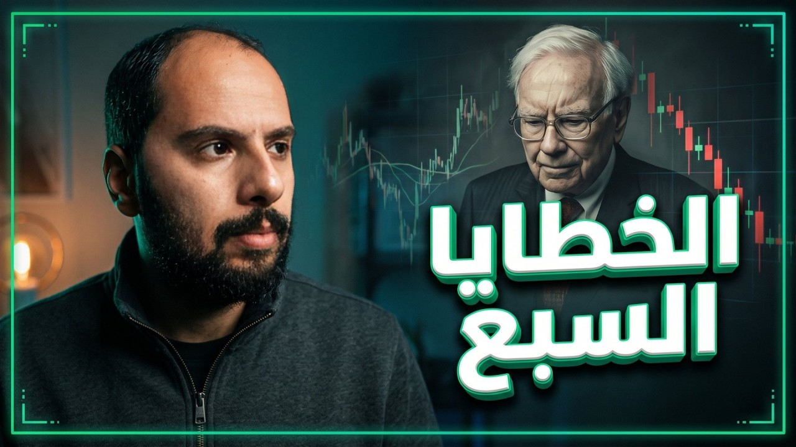

استثمار
اخطاء وارن بافيت! 12 سنت كلّفوه 200 مليار دولار
Warren Buffett رفض يبيع أسهمه بسبب فرق 12 سنت ونص، والقرار ده كلّفه بتقديره هو 200 مليار دولار. وبعدها عمل تقريبًا كل الغلطات اللي ممكن مستثمر صغير يعملها، وزوّد عليها غلطات أكبر بكتير. ومع ذلك بقى من أنجح المستثمرين في التاريخ، والفرق في اللي بيحصل بعد الغلطة.

شغّل الحلقة12 سنت ونص، قدام 200 مليار دولار. الرقم الأولاني هو الفرق اللي بسببه Warren Buffett رفض يبيع أسهمه سنة 1964، وقتها كان لسه شاب عنده 33 سنة. والرقم التاني هو تمن القرار ده، بتقدير Buffett نفسه.1
يومها Buffett كان قدامه مكسب 50% في جيبه، بس لأن العرض جه أقل بـ 12 سنت ونص من المبلغ اللي اتفق عليه، عِند واتضايق ورفض يبيع. وبعد حوالي 50 سنة اعترف بالغلط ده، وقال إنه كان قرار في منتهى الغباء.11 ودي كانت مجرد البداية لرحلة مليانة أخطاء: بعدها بـ 3 سنين عمل الغلطة العكسية بالظبط، وبعد 30 سنة عمل غلطة فضلت تكبر حتى بعد ما خلصت، وفي 2020، وهو في عز خبرته وعنده 89 سنة، خد ضربتين بسبب أخطائه.
على الناحية التانية عندنا نور، شابة عندها 28 سنة بتحط جزء من دخلها في الأسهم. نور شخصية خيالية، بس غلطاتها في الاستثمار حقيقية جدًا، وبتحصل لكتير مننا. والغريب إن Buffett عمل كل الغلطات اللي نور بتعملها، وزوّد عليها غلطات هي مستحيل تعرف تعملها. طيب، طالما الاتنين بيغلطوا نفس الغلطات، ليه محفظة نور بتخسر، وBuffett بقى من أنجح المستثمرين في التاريخ؟
إيه الغلطات السبعة اللي عملتها نور في سنة واحدة؟ 1:18
إحنا داخلين على ديسمبر، آخر شهر في السنة. نور بتفتح تطبيق الأسهم، وكل الأرقام قدامها بالأحمر. والمشكلة مش إن السوق كان وحش، ولا إن حد بيضحك عليها. كل اللي حصل إن نور خدت 7 قرارات على مدار السنة، وكل قرار فيهم كان باين وقتها منطقي جدًا.
في يناير اشترت سهم بـ 120 دولار، وحطت في دماغها رقم: أول ما يوصل لـ 150 هتبيع. عدّى كام شهر والسهم وصل لـ 148، فاضل 2 دولار بس، فقالت هستنى شوية. وبعدها بأسبوع السهم نزل ومطلعش تاني.
نور اتضايقت، ووعدت نفسها ما تكررش الغلطة: المرة الجاية أول ما تكسب 10% هتبيع على طول. وفعلًا في مارس سهم تاني طلع 10%، فباعته في نفس اليوم علشان تضمن المكسب. والنتيجة إن السهم كمّل طلوع شهر ورا شهر، ولو كانت سابته كانت كسبت 200%.
دلوقتي معاها كاش وعاوزة تعوّض. لقت سهم ممتاز بـ 50 دولار، وعلى ما فكرت ودوّرت طلع لـ 52، فقالت مش هتدفع زيادة، وهتستنى لما ينزل تاني تحت الـ 50. السهم مرجعش، وطار. وفي نفس الوقت كانت شايفة بعينها زمايلها في الشغل بيدفعوا اشتراك في تطبيق معين، ففكرت تشتري سهم في الشركة دي، بس قالت هفكر الشهر الجاي. والشهر الجاي عدّى واللي بعده عدّى، والسهم طار.
وسهم يناير اللي كانت مستنياه يوصل 150؟ نزل تحت الـ 120 اللي اشترت بيها، وكل كام يوم يطلع عنه خبر أسوأ. بس نور قررت ما تبيعش بخسارة، وتستنى لحد ما يرجع لسعره اللي اشترت بيه. السعر مرجعش، فخسرت كتير من فلوسها، والأهم إنها خسرت فرص كتير في السوق كان ممكن تدخلها. وعشان تلحق اللي فاتها، اشترت سهم الكل كان بيتكلم عنه عشان سعره اتضاعف، وبعد ما اشترته نزل. ووعدت نفسها ما تكررهاش، وفي ديسمبر كررتها تاني.
7 قرارات، مفيش ولا واحد فيهم غبي لوحده: كل قرار كان رد فعل على اللي قبله. وطبيعي إن مستثمر صغير يغلط الغلطات دي، بس الغريب إن عملاق زي Warren Buffett وقع فيها كلها.
إزاي 12 سنت ونص خلّوا Buffett يمسك Berkshire Hathaway؟ 3:22
فاكر أول قرار لنور، الرقم اللي حطته في دماغها؟ هو نفس القرار اللي بدأت بيه حكاية Berkshire Hathaway (بيركشاير هاثاواي). سنة 1962، Buffett كان عنده 32 سنة، وبيدير شراكة استثمارية حاطط فيها تقريبًا كل ثروته.11 وقتها كان بيدوّر على نوع معين من الأسهم: شركات مش بتكسب، وسهمها رخيص جدًا، لدرجة إنه بيتباع بأقل من قيمته، فيشتريه ويبيع بعد شوية بمكسب.
وBerkshire Hathaway كانت مثال نموذجي للموضوع ده: شركة نسيج في شمال شرق أمريكا، كانت في يوم من الأيام عملاق الصناعة بـ 14 مصنع و10 آلاف عامل.11 بس الصناعة كلها كانت بتموت، لدرجة إن مجلس الإدارة كتب ده بنفسه في محضر اجتماعه سنة 1954. وفي السبع سنين اللي بعد الاندماج اللي عمل الشركة، كانت بتخسر، وصافي قيمتها الدفترية قلّ 37%، وقفلت 9 مصانع.11
اللي لفت نظر Buffett ما كانش المصانع اللي بتقفل، لكن إن الشركة ساعات لما بتقفل مصنع بتاخد فلوسه وتشتري بيها أسهمها من المساهمين.11 فبدأ يشتري، والسهم وقتها كان بـ 7 دولار ونص، في الوقت اللي نصيب السهم الواحد من البضاعة والأصول اللي جوه الشركة، بعد ما تخصم ديونها، كان أكتر من 10 دولار.11 والخطة كانت بسيطة: يشتري رخيص، ويستنى الشركة تقفل مصنع كمان، ويبيعلها أسهمه بسعر أعلى.
وفي مايو 1964 الخطة اشتغلت. الشركة كانت باعت مصانع وقررت تشتري أسهمها، ومديرها سأل Buffett: تبيعلي بكام؟ Buffett قاله 11 دولار ونص، فرد المدير: اتفقنا. وبعدها بكام يوم وصل الجواب الرسمي، والسعر فيه 11 دولار و37 سنت ونص.111
هنا Buffett اتغاظ، واعتبر إن الراجل بيغيّر اتفاقه. ورد فعله ما كانش إنه يرفض الصفقة ويمشي، لأ، بدأ يشتري أسهم الشركة بشراهة. وبعدها بسنة كانت شراكته مالكة حوالي 40% من الشركة، فسيطر عليها ومشّى المدير.11
Buffett حكى الحكاية دي بعدين، وقال إن اللي حصل كان تصرفات عيال، وسأل: هو تُمن دولار كان هيفرق مع مين فينا أصلًا؟11 بس الفرق الحقيقي إن Buffett، وهو عنده 34 سنة، لقى أكتر من ربع فلوس شراكته محبوسة في بزنس خسران، معرفش عنه غير حاجات قليلة. ووصف نفسه وقتها وصف يضحك: بقيت الكلب اللي مسك العربية.11 يعني الكلب اللي فضل يجري ورا العربية لحد ما مسكها، وبعدين وقف مش عارف هيعمل إيه.
ودي بالظبط غلطة نور الأولى: نور رفضت تبيع بـ 148 وكانت مستنية السهم يوصل لـ 150، وBuffett رفض يبيع بسبب 12 سنت ونص. الفرق إن غلطة نور كلّفتها شوية فلوس، وغلطة Buffett، بتقديره هو، كلّفته 200 مليار دولار.1 طيب إزاي مصنع نسيج خسران يوصل لرقم زي ده؟ دي حسبة هنرجعلها.
ليه Buffett شاف بيع Disney غلطة ضخمة وهو كسبان؟ 6:00
سنة 1966، وBerkshire في إيد Buffett بقالها سنة، كان بيبص على شركة في صناعة تانية خالص: Disney (ديزني)، شركة أفلام كارتون وملاهي. قابل Walt Disney بنفسه، واشترى 5% من أسهم الشركة بـ 4 مليون دولار، وبعد سنة واحدة باعهم بـ 6 مليون، يعني مكسب حوالي 50%.4
على الورق الصفقة ممتازة. بس بعد أكتر من 30 سنة، في اجتماع المساهمين، حد سأله عنها، فرد وقال إنها كانت غلطة ضخمة.4 غلطة إزاي وهو كسبان؟ لأن تمن الغلطة هنا مش فلوس خرجت من جيبه، تمنها إن الأسهم دي كانت هتبقى بكام لو كان سابها وما استعجلش في بيعها.
ودي فكرة هنحتاجها في الآخر: ساعات الغلطة بتبقى صفقة إنت طالع منها كسبان أصلًا. يعني في 3 سنين بس، Buffett رفض يبيع أسهم في شركة بتخسر، واتسرّع وباع أسهم بتكسب. عمل الغلطة وعكسها. ودي غلطات بيغلطها تقريبًا معظم المستثمرين، بس الغلطة الجاية مش أي حد يقدر يغلطها.
إزاي شركة أحذية ماتت فضل تمنها يكبر؟ حكاية Dexter Shoe 7:00
سنة 1993، وBerkshire بقت شركة ضخمة، Buffett اشترى شركة أحذية أمريكية اسمها Dexter Shoe (دكستر شو). الشركة كان تاريخها ممتاز، وBuffett شاف إن عندها ميزة هتفضل معاها. بس في خلال سنين قليلة المنافسة الأجنبية أكلت الميزة دي، وقيمة الشركة وصلت للصفر.11
لحد هنا دي غلطة عادية: شركة اشتريتها وفشلت، والتمن 433 مليون دولار، رقم كبير بس معروف.10 المشكلة إن Buffett ما دفعش الـ 433 مليون دول كاش، دفعهم أسهم من Berkshire نفسها.10 والفرق ده هو الحكاية كلها، لأن الأسهم دي ما فضلتش بـ 433 مليون: Berkshire كانت ماشية كويس، وأسهمها كل سنة بتغلى عن اللي قبلها، فتمن شركة الأحذية الحقيقي كان بيزيد مع كل زيادة في سهم Berkshire.
سنة 2007 Buffett حسبها في خطابه للمساهمين: التكلفة الحقيقية مش 433 مليون، دي 3.5 مليار، وسماها أسوأ صفقة عملها.10 وفي خطاب 2014 رجع حسبها تاني، بقت حوالي 5.7 مليار دولار.11 يعني شركة ماتت من سنين، وتمنها لسه بيكبر، لدرجة إن Buffett كتب إنها تستاهل تتحط في موسوعة Guinness.11
ليه Buffett بيعتبر الصفقات اللي ما عملهاش غلطات؟ Walmart وGoogle 8:08
غلطات Buffett مش بس في الشراء، بتظهر برضه لما ما بيشتريش خالص. في اجتماع المساهمين سنة 2004، وهو عنده 73 سنة، قال إن أسوأ غلطة عملها مؤخرًا هي Walmart (وول مارت).3 كان ناوي يشتري حصة كبيرة منها وبدأ يشتري فعلًا، والسعر طلع حاجة بسيطة، فبطّل يشتري وقال يستنى لما ينزل تاني. والسعر منزلش. وBuffett قدّر التمن ده بحوالي 10 مليار دولار.3
والغلطة دي شبه غلطة نور لما استنت السهم ينزل من فوق الـ 52 عشان تشتريه بـ 50. والأغرب إنها نفس غلطة Buffett سنة 1964، بس مقلوبة: سنة 1964 رفض يبيع عشان فرق سعر صغير، وفي Walmart رفض يشتري بسبب فرق سعر صغير. بعد عشرات السنين، نفس الراجل ونفس الغلطات.
وللنوع ده من الغلطات نسخة أصعب. سنة 2017 Buffett حكى إن شركة التأمين بتاعته، GEICO (جايكو)، كانت بتدفع لـ Google (جوجل) من 10 لـ 11 دولار على كل ضغطة إعلانية.2 يعني كان شايف بعينه Google بتكسب كام من شركته، وما فكرش يشتري فيها، وبعدها اعترف وقال إنه ضيّعها من إيده.2
زي بالظبط نور والتطبيق اللي زمايلها كانوا بيدفعوا اشتراكه: الدليل كان قدامها وأجّلت. والغلطة دي ملهاش رقم، مش هتلاقيها في كشف حساب ولا في خطاب للمساهمين، لأن محدش بيسجّل الفلوس اللي ما كسبهاش.
إمتى البيع المتأخر بيبقى غلط زي البيع بدري؟ حكاية Tesco 9:30
لحد هنا شفنا Buffett بيشتري غلط، وبيبيع بدري، وبيسيب الفرصة وما بيشتريش خالص. فاضل إيه؟ في آخر 2012، Berkshire كانت مالكة أكتر من 400 مليون سهم في Tesco (تيسكو)، أكبر سلسلة سوبر ماركت في بريطانيا، استثمار بـ 2.3 مليار دولار.11
وفي 2013 Buffett بدأ يقلق من إدارة الشركة، فباع جزء.11 وفي 2014 المشاكل بدأت تطلع ورا بعض: حصتها في السوق بتقع، والأرباح بتقل، وظهرت مشاكل في الحسابات، فاضطر يبيع كل الأسهم. والخسارة كانت 444 مليون دولار بعد الضرايب، وكتب بنفسه إنه غلط غلطة كبيرة لأنه اتلكّع.11
فاكر Disney لما باع حصة كويسة بدري؟ هنا، وبعد 47 سنة، عمل العكس. يعني البيع بدري غلط، والبيع متأخر غلط.
ونور عملت الغلطتين برضه. ودي غلطة بيغلطها عدد كبير من المستثمرين العاديين، لدرجة إن سنة 1998 باحث اسمه Terrance Odean (تيرانس أوديان) مسك بيانات 10 آلاف حساب في شركة سمسرة كبيرة، وسأل سؤال بسيط: المستثمرين العاديين بيبيعوا إمتى؟7 ولقى إنهم بيميلوا يبيعوا الأسهم الكسبانة بسرعة، ويشيلوا الأسهم الخسرانة لفترة كبيرة، والأغرب إن الأسهم اللي باعوها ما كانتش أسوأ من اللي شالوها.7 يعني النمط ده ملوش مبرر.
غلطة نور، المستثمرة العادية، سلوك متسجّل في آلاف الحسابات، وBuffett عمله بنفسه في الاتجاهين.
صفقات 2016: هل غلطات Buffett خلصت؟ 10:54
سنة 2016، Buffett عمل صفقة من أكبر صفقات Berkshire: اشترى شركة بتصنّع أجزاء للطيارات، Precision Castparts (بريسيجن كاستبارتس)، بـ 32 مليار دولار.5 وفي نفس السنة عمل حاجة غريبة: اشترى أسهم في أكبر 4 شركات طيران في أمريكا.6
غريبة ليه؟ لأن Buffett نفسه كتب في خطابه سنة 2007 إن الطيران من أسوأ أنواع البزنس، وإن المستثمرين اللي بيحطوا فلوسهم فيه كأنهم بيرموها في بير ملوش قرار.10
إزاي مصنع نسيج خسران يوصل لـ 200 مليار دولار؟ 11:21
نرجع للسؤال اللي سبناه في الأول. أول حتة في الإجابة: Buffett مسك Berkshire، وفضل 18 سنة بيحاول ينقذ النسيج من غير أي فايدة، لحد ما قفله سنة 1985.11 وفي خطاب كتبه وهو عنده 94 سنة، لسه بيقول إن السيطرة على Berkshire كانت غلطة، وغلطته هو.13
بس دي مش أغلى نقطة. أوائل سنة 1967، جاتله فرصة يشتري شركة تأمين صغيرة بـ 8.6 مليون دولار. صاحبها كان صاحبه، وكان عاوز يبيعها لـ Buffett شخصيًا، وBuffett اشتراها باسم Berkshire.11 والقرار ده بالذات كتب عنه في خطابه سنة 2014 إنه كان أغلى غلطة في حياته.11
ليه؟ لو كان اشترى شركة التأمين باسمه وباسم شراكته، كانت هتبقى ملكه هو وشركاه بنسبة 100%. لكن Berkshire وقتها ما كانتش ملكه 100%: هو وشركاه كانوا مالكين حوالي 60%، والباقي ملك مساهمين تانيين.11 والمشكلة إن شركة التأمين دي بالذات بقت الأساس اللي اتبنت عليه Berkshire، فكل اللي Berkshire اشترته بعد كده كان تقريبًا 4 من كل 10 دولار منه بيروح لمساهمين ما كانوش جزء من الصفقة أصلًا، وهو ما لوش أي التزام ناحيتهم.11
وده غير إن Berkshire كانت شايلة مصنع النسيج اللي بيخسر، فالفلوس اللي كان ممكن تكبّر شركة التأمين فضلت 18 سنة محبوسة في المصانع. ودي غلطة مستحيل نور أو أي مستثمر عادي يغلطها. وعشان كده، في مقابلة سنة 2010، قدّر إن لو كان حط الفلوس دي في شركة التأمين من الأول، Berkshire كانت هتبقى أكبر بحوالي 200 مليار دولار.1
إزاي Buffett بقى من أنجح المستثمرين رغم كل الغلطات دي؟ 13:01
وهنا أهم سؤال في الحكاية: لو Warren Buffett غلط كل غلطات نور، وغلطات أكبر منها بكتير، إزاي بقى واحد من أنجح المستثمرين في التاريخ؟ الإجابة كتبها هو بنفسه. في خطابه للمساهمين سنة 2022، قال إن في الـ 58 سنة اللي أدار فيها Berkshire، أغلب قراراته ما كانتش أحسن من عادية، وإن النتايج الكويسة جت من حوالي 12 قرار كويسين بجد.12
طب إزاي دستة قرارات تغطي على كل الغلطات دي؟ سنة 1994، Buffett كان خلّص شراء أسهم في Coca-Cola، ووصل لحوالي 400 مليون سهم، كلّفوه 1.3 مليار دولار.12 السنة دي Coca-Cola دفعتله أرباح 75 مليون دولار، وفي 2022 الأرباح بقت 704 مليون دولار، وقيمة الأسهم نفسها بقت 25 مليار دولار.12
وبعدين Buffett عمل حسبة بسيطة: افترض إنه حط نفس المبلغ، 1.3 مليار دولار، في غلطة، صفقة لا كسبانة ولا خسرانة وفضلت زي ما هي. صفقة Coca-Cola كبرت حوالي 19 مرة، لكن الغلطة هتفضل بنفس المبلغ، ونسبتها النهارده من Berkshire مش هتكمل 1%، يعني تقريبًا ما تتشافش.12
وده الفرق الأول: أقصى حاجة ممكن تخسرها في غلطة هي الفلوس اللي حطيتها فيها، لكن لو قرارك كان صح، المكسب ملوش سقف، ممكن فلوسك تكبر 10 أو 20 مرة. ومع الوقت القرارات الصح بتكبر لدرجة إن الغلطات جنبها تبان صغيرة.
الفرق التاني هو الوقت: Coca-Cola احتاجت حوالي 30 سنة عشان توصل للرقم ده، ودي مدة المستثمرين الصغيرين مش بيسيبوا فلوسهم فيها. والفرق التالت مش في إيدينا: الحظ أو التوفيق. Buffett نفسه كتب إن في بعض الحالات، قراراته الوحشة أنقذها حظ كبير جدًا.12
Buffett بيتعامل مع غلطاته إزاي؟ 14:57
وأكيد مش دي بس الفروق بين Buffett وأي مستثمر تاني. بس يمكن أكبر فرق لاحظته وأنا بحضّر الحلقة، إن Buffett بيركز دايمًا مع غلطاته، وبيحسب تكلفتها عليه كانت هتبقى كام، ومش بيخجل منها وبيعترف بيها. وفي قراءتي، الغلطات دي نفسها جزء كبير من نجاحه، لأنها ساعدته في الآخر ياخد قرارات تانية كانت صح.
في سبتمبر 2026، وهو عنده 96 سنة، Buffett ساب رئاسة مجلس إدارة شركته بعد أكتر من 50 سنة، وفضل عضو في المجلس.8 والشركة اللي اشتراها عشان فرق 12 سنت ونص، واللي لسه بيقول عليها غلطة كبيرة، لسه شايلة نفس الاسم، لكن حجمها بقى عملاق.
وكل الغلطات دي إحنا عارفينها لأنه هو اللي حكاها. في خطابه سنة 2024، قال إنه استخدم كلمة «غلطة» أو «خطأ» في خطاباته على مدار 5 سنين حوالي 16 مرة، وإن شركات كبيرة كتير ما استخدمتهاش ولا مرة.13 وقال إن أكبر خطيئة إنك تتأخر في تصليح غلطتك.13
ولو رجعنا للجواب اللي اتبعتله سنة 1964، ساعتها كان باين إن الحكاية كلها 12 سنت ونص. بس الـ 12 سنت ونص ما كانوش غاليين عشان هما 12 سنت ونص، كانوا غاليين عشان العقود اللي جت بعدهم. ونفس الحاجة، الوقت هو اللي خلّى 1.3 مليار دولار في Coca-Cola يبقوا 25 مليار دولار.12
الوقت كبّر الغلطة وكبّر النجاح
والفرق بين Buffett ونور مش في عدد الغلطات. الاتنين غلطوا نفس الغلطات، وغلطات Buffett أكبر بكتير، لكن الفرق في اللي بيحصل بعد الغلطة. ودلوقتي قولّي: أنهي غلطة من غلطات نور السبعة عملتها قبل كده؟ قابلني في التعليقات على الحلقة.
فصول الحلقة
- 0:00 12 سنت ونص قدام 200 مليار
- 1:18 سنة نور: 7 قرارات منطقية
- 3:29 Berkshire Hathaway والـ 12 سنت ونص
- 6:00 Disney: صفقة كسبانة وغلطة ضخمة
- 7:00 Dexter Shoe: غلطة فضلت تكبر
- 8:08 Walmart وGoogle: الفرص اللي ضاعت
- 9:39 Tesco: البيع متأخر
- 10:54 شركات الطيران
- 11:21 إزاي مصنع نسيج يوصل لـ 200 مليار؟
- 13:01 دستة قرارات وCoca-Cola
- 15:20 الفرق بين Buffett ونور
أسئلة شائعة
ليه Warren Buffett بيقول إن شراء Berkshire Hathaway كان غلطة؟
لأنه اشتراها عِند بعد ما الجواب الرسمي جه بسعر أقل من اللي اتفقوا عليه، ورفض يبيع بسبب 12 سنت، فلقى نفسه شايل بزنس نسيج خسران. وفي مقابلة سنة 2010 قدّر إن لو كان حط الفلوس في شركة التأمين من الأول، Berkshire كانت هتبقى أكبر بحوالي 200 مليار دولار.
إيه أغلى غلطة في حياة Warren Buffett بحسب كلامه؟
شراء شركة تأمين صغيرة أوائل سنة 1967 باسم Berkshire بدل ما يشتريها باسمه وباسم شراكته. هو وشركاه كانوا مالكين حوالي 60% بس من Berkshire، فكل اللي اتبنى على شركة التأمين بعد كده كان تقريبًا 4 من كل 10 دولار منه بيروح لمساهمين تانيين.
إزاي Buffett نجح رغم كل غلطاته؟
بحسب خطابه سنة 2022، النتايج الكويسة جت من حوالي 12 قرار كويسين. والقرار الصح مكسبه ملوش سقف، زي Coca-Cola اللي كبرت حوالي 19 مرة، لكن أقصى حاجة ممكن تخسرها في غلطة هي الفلوس اللي حطيتها فيها.
إيه اللي لقاه Terrance Odean عن المستثمرين العاديين؟
سنة 1998 درس بيانات 10 آلاف حساب في شركة سمسرة كبيرة، ولقى إن المستثمرين العاديين بيميلوا يبيعوا الأسهم الكسبانة بسرعة ويشيلوا الخسرانة لفترة كبيرة. والأسهم اللي باعوها ما كانتش أسوأ من اللي شالوها.
ليه صفقة Dexter Shoe كلّفت Buffett أكتر من تمنها بكتير؟
لأنه دفع الـ 433 مليون أسهم من Berkshire مش كاش، والأسهم دي فضلت تغلى. فبقت التكلفة الحقيقية 3.5 مليار في حسبة خطاب 2007، وحوالي 5.7 مليار دولار في حسبة خطاب 2014.
المصادر
- «تقديره · مقابلة 2010» (~$200 billion): CNBC, 18 Oct 2010 — https://www.cnbc.com/2010/10/18/warren-buffett-buying-berkshire-hathaway-was-200-billion-blunder.html
- «I blew it» (Google, GEICO $10–11 a click): Berkshire's 2017 annual meeting, reported by KSL — https://www.ksl.com/article/44143362/i-blew-it-warren-buffett-laments-missing-out-on-google
- Walmart ~$10 billion (2004 meeting): Jason Zweig's notes, CNN Money — https://money.cnn.com/2004/05/03/pf/buffett_qanda/
- Disney (5%, $4M → $6M, «a huge mistake»): Benzinga — https://benzinga.com/top-stories/24/12/42706002/warren-buffett-said-selling-disney-was-a-huge-mistake-legendary-investor-should-have-been-buying
- Precision Castparts $32 billion: The Business Standard (TBS) — https://www.tbsnews.net/node/208588
- Airlines 2016: Fortune — https://fortune.com/2016/11/14/walmart-stock-warren-buffett-airline-stocks
- Terrance Odean, «Are Investors Reluctant to Realize Their Losses?» (1998), 10,000 brokerage accounts — https://faculty.haas.berkeley.edu/odean/papers/disposition/disposition.html
- September 2026, stepping down as chairman: WOWT — https://www.wowt.com/2026/09/18/warren-buffett-steps-down-berkshire-hathaway-chairman/
- Dexter Shoe ($433 million in shares, $3.5 billion, «the worst deal that I've made»; $5.7 billion, Guinness), Tesco (415 million shares, $2.3 billion, $444 million, «dawdling»), National Indemnity ($8.6 million, «the most costly in my career»), the airlines' «bottomless pit», «no better than so-so», «about a dozen truly good decisions», «rescued by very large doses of luck», «a mistake – my mistake», «16 times»: the Berkshire Hathaway shareholder letters above.
- berkshirehathaway.com https://www.berkshirehathaway.com/letters/2007ltr.pdf
- berkshirehathaway.com https://www.berkshirehathaway.com/letters/2014ltr.pdf
- berkshirehathaway.com https://www.berkshirehathaway.com/letters/2022ltr.pdf
- berkshirehathaway.com https://www.berkshirehathaway.com/letters/2024ltr.pdf
مشاهد الذكاء الاصطناعي في الحلقة
- Warren Buffett — AI caricature (teaser asset, v1, cut out; Nady approved it for the long episode) — AI-generated (own) (reused from the teaser short (shorts/01-teaser-buffett/beats.json, Nano Banana Pro via fal.ai, logged in _assets/buffett/pack/ai/ai-log.json) — $0 in this episode)
- mill-motion — the teaser's mill-ai.png animated (Kling 3.0 Pro, 5 s, square 1440×1440) — AI-generated (own)
- film-reel — a 1960s 16mm film reel in its can (v2, Apple Vision cut-out) — AI-generated (own)
- shoebox — early-1990s penny loafers in an open shoebox (v2, Apple Vision cut-out) — AI-generated (own)
- dexter-factory — an empty early-1990s shoe factory (Kling 3.0 Pro, 5 s) — AI-generated (own) (machine nameplates blurred: 6 moving feathered patches (pseudo-lettering on the arms, Nady's REPLY 3); source clip c221-shoe-factory.mp4 kept unedited in _assets)
- turbine-blade — a cast turbine blade (v2, Apple Vision cut-out) — AI-generated (own)
- mill-gate-1985 — the chained gate of a red-brick mill, winter 1985 (v2) — AI-generated (own)
- insurance-office-1967 — an empty 1967 insurance office (v1) — AI-generated (own)
- coin-spin — a 1960s quarter spins on a walnut desk and falls eagle side up (Kling 3.0 Pro, trimmed to 2.4 s) — AI-generated (own) (trimmed for legibility (REPLY 4): Kling frames 8–44 (the spin, lettering smeared) + 97–120 (the fall and the landing, eagle up), 3-frame crossfade at the join; dropped 0–7 (real coin legend legible) and 45–96 (garbled pseudo-legend legible); no portrait side in any frame; source clip c501-coin-spin.mp4 kept unedited in _assets)
- a 1960s stock certificate (teaser asset, v1, cut out) — AI-generated (own) (reused from the teaser short (shorts/01-teaser-buffett/beats.json, Nano Banana Pro via fal.ai, logged in _assets/buffett/pack/ai/ai-log.json) — $0 in this episode)
- a worn early-1960s US quarter, eagle side (teaser asset, v1, cut out) — the 12.5¢ motif — AI-generated (own) (reused from the teaser short (shorts/01-teaser-buffett/beats.json, Nano Banana Pro via fal.ai, logged in _assets/buffett/pack/ai/ai-log.json) — $0 in this episode)
- an early-1960s New England textile mill (teaser asset, v1) — also the source image of c114-mill-motion — AI-generated (own) (reused from the teaser short (shorts/01-teaser-buffett/beats.json, Nano Banana Pro via fal.ai, logged in _assets/buffett/pack/ai/ai-log.json) — $0 in this episode)
- a hand lifting a 1960s rotary phone receiver (teaser asset, v1, cut out) — AI-generated (own) (reused from the teaser short (shorts/01-teaser-buffett/beats.json, Nano Banana Pro via fal.ai, logged in _assets/buffett/pack/ai/ai-log.json) — $0 in this episode)
- Teaser short (01-teaser-buffett): AI caricature (a clearly stylised illustration): Warren Buffett — an AI caricature (clearly stylised; likeness reference: the public-domain 2015 SelectUSA photo) (Nano Banana Pro)
- Teaser short (01-teaser-buffett): AI-generated image: a worn early-1960s silver coin (AI, cut out) (Nano Banana Pro)
- Teaser short (01-teaser-buffett): AI-generated image: an early-1960s New England textile mill (AI) (Nano Banana Pro)
- Teaser short (01-teaser-buffett): AI-generated image: a hand lifting a black 1960s rotary desk phone (AI, cut out) (Nano Banana Pro)
- Teaser short (01-teaser-buffett): AI-generated image: a 1960s stock certificate (AI, cut out) (Nano Banana Pro)
- Teaser short (01-teaser-buffett): AI-generated image: a 1960s office door with an empty brass nameplate holder (AI) (Nano Banana Pro)
- صورة Warren Buffett في غلاف الحلقة وغلاف التيزر جزء من تصميم نادي بالذكاء الاصطناعي (Gemini)، ومش صورة حقيقية.
صور الأشخاص
- Nour — AI-generated character illustration (Nano Banana Pro (fal-ai/nano-banana-pro + /edit) via fal.ai; background removal Bria RMBG 2.0)
الصور
- Walt Disney — NASA · Public domain https://commons.wikimedia.org/wiki/File:Walt_Disney_and_Dr._Wernher_von_Braun_-_GPN-2000-000060_(cropped).jpg
- Teaser short (01-teaser-buffett): Photo: Warren Buffett at the 2015 SelectUSA Investment Summit — USA International Trade Administration · Public domain https://commons.wikimedia.org/wiki/File:Warren_Buffett_at_the_2015_SelectUSA_Investment_Summit.jpg
.jpg){kind=link}

الشعارات (علامات تجارية لأصحابها، للتعريف بالشركة بس)
- americanairlines — icon from simple-icons (CC0) https://simpleicons.org
- cocacola — icon from simple-icons (CC0) https://simpleicons.org
- google — icon from simple-icons (CC0) https://simpleicons.org
- southwestairlines — icon from simple-icons (CC0) https://simpleicons.org
- tesco — icon from simple-icons (CC0) https://simpleicons.org
- unitedairlines — icon from simple-icons (CC0) https://simpleicons.org
- Berkshire Hathaway — Public domain https://commons.wikimedia.org/wiki/File:Berkshire_Hathaway.svg
- Delta Air Lines — Public domain https://commons.wikimedia.org/wiki/File:Delta_logo.svg
- Disney — Public domain https://commons.wikimedia.org/wiki/File:Walt_Disney_wordmark.svg
- GEICO — Public domain https://commons.wikimedia.org/wiki/File:Geico_logo.svg
- Precision Castparts — Public domain https://commons.wikimedia.org/wiki/File:Precision_Castparts_logo.svg
- Walmart — Public domain https://commons.wikimedia.org/wiki/File:Walmart_logo_(2025).svg
- AI-generated scenes: Kling 3.0 Pro (image-to-video), Nano Banana Pro (stills) via fal.ai


.svg){kind=link}
المؤثرات الصوتية
- "Cinema-Projector.wav" by Dr. Macak — CC0 1.0 (no attribution required) — . Macak/sounds/253758 https://freesound.org/people/Dr
- "Quarter Spin" by TravieDoodle — CC0 1.0 (no attribution required) — https://freesound.org/people/TravieDoodle/sounds/542232
- "Rewind 2" by LuKaiX — CC0 1.0 (no attribution required) — https://freesound.org/people/LuKaiX/sounds/539928
- "Tv static render.wav" by Warrick_Lendon — CC0 1.0 (no attribution required) — https://freesound.org/people/Warrick_Lendon/sounds/542635
- "type writing" by mlekoman — CC0 1.0 (no attribution required) — https://freesound.org/people/mlekoman/sounds/320571
- "VHS Glitch" by Sassaby — CC0 1.0 (no attribution required) — https://freesound.org/people/Sassaby/sounds/264935
- Teaser short (01-teaser-buffett): SFX «glitch-short»: «Glitch 01» by JacksonMiller0 — CC0 1.0 https://freesound.org/people/JacksonMiller0/sounds/237607
- Teaser short (01-teaser-buffett): SFX «tick»: tick-1 — CC0-1.0 https://kenney.nl/assets/interface-sounds
- Teaser short (01-teaser-buffett): SFX «bass»: impact-punch — CC0-1.0 https://kenney.nl/assets/impact-sounds
- Teaser short (01-teaser-buffett): SFX «paper»: card-slide — CC0-1.0 https://kenney.nl/assets/casino-audio
- Teaser short (01-teaser-buffett): SFX «cash»: «Cash register» by MaoDin204 — CC0 1.0 https://freesound.org/people/MaoDin204/sounds/721774
- Teaser short (01-teaser-buffett): SFX «pop»: pluck-2 — CC0-1.0 https://kenney.nl/assets/interface-sounds
- Teaser short (01-teaser-buffett): SFX «strike»: whip — CC0-1.0 https://www.remotion.dev/docs/sfx/whip
- Teaser short (01-teaser-buffett): SFX «swoosh»: «Swipe Whoosh» by qubodup — CC0 1.0 https://freesound.org/people/qubodup/sounds/60007
- Teaser short (01-teaser-buffett): SFX «riser»: riser-soft — synthesised for the channel (no licence needed)
Library sound effects
- The template's own sound library (Kenney CC0 packs, @remotion/sfx CC0 sounds, sounds synthesized for the channel) — CC0, no attribution required.
Documents (quote crops only, never full pages)
- Berkshire Hathaway shareholder letters — © Berkshire Hathaway Inc. — quoted crops of the 2007, 2014, 2022 and 2024 letters (only the quoted words legible on screen): https://www.berkshirehathaway.com/letters/2007ltr.pdf https://www.berkshirehathaway.com/letters/2014ltr.pdf https://www.berkshirehathaway.com/letters/2022ltr.pdf https://www.berkshirehathaway.com/letters/2024ltr.pdf
- Teaser short (01-teaser-buffett): Document: Berkshire Hathaway 2014 Annual Report — Chairman's letter, «Berkshire — Past, Present and Future» (the May 6, 1964 offer at $11.375) — Berkshire Hathaway 2014 Annual Report · © Berkshire Hathaway Inc. — shown with credit https://www.berkshirehathaway.com/2014ar/2014ar.pdf
Corrected figures (what the graphics show, and why)
- Berkshire's textile business (c122–123): the graphics show only «قفلت 9 مصانع». The letter's figure is a 37% fall in net (book) worth over seven years of losses — not in the share price (2014 letter, «In the Beginning»); no percentage is shown on screen.
- c363–364: the 2024 letter says «a mistake – my mistake» (the graphic quotes exactly that; it does not say «one of his biggest»). That letter was published in February 2025, so the age stamp shows only «94 سنة», with no year.
- c464: the 2022 letter says «In some cases» — the graphic reads «في حالات» (not «في حالات كتير»).
- c480: in September 2026 Buffett stepped down as chairman of the board (he stays on the board) — the graphic reads «ساب رئاسة مجلس الإدارة».
- c475–477: «he considers his mistakes part of his success» is Nady's reading, not a Buffett quote; it is never shown on screen as his words.
- Tesco shares: the letter says 415 million — the graphic shows «أكتر من 400 مليون سهم».
مشاهد الذكاء الاصطناعي في الحلقة
- Every AI image and clip on screen carries «هذا المشهد تم توليده بالذكاء الاصطناعي» (AI stills and clips only in split / cutaway panels, never over Nady's own footage).
- AI spend for this episode: $4.50 (fal.ai: Nano Banana Pro stills $2.40, Kling 3.0 Pro clips $2.10).
- YouTube: Altered or synthetic content = Yes